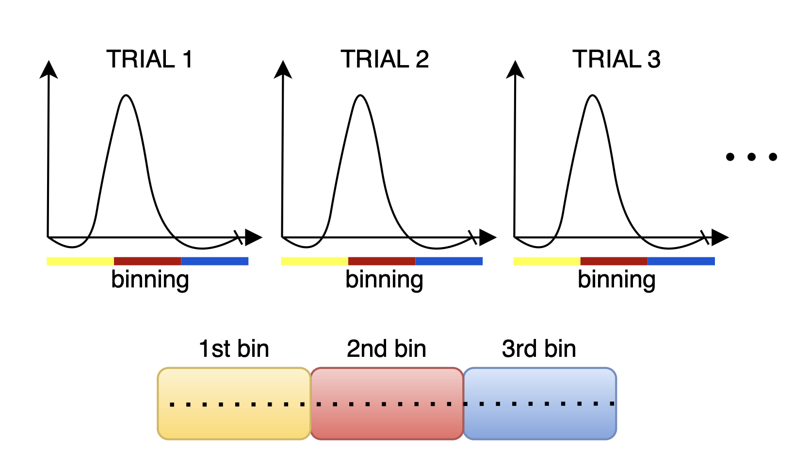

Second Example: Task-Based (Hi-Fi) fMRI¶
This section discusses the binning process for task-based fMRI, which focuses on isolating the haemodynamic response to specific stimuli. By averaging multiple trials, this method effectively reduces the contributions of temporally uncorrelated brain activity, resulting in a clearer signal.
For instance, in a visual stimulation study, delayed activation in the brain’s visual processing regions can be captured without assumptions about the shape of the haemodynamic response. This is done by combining readouts from several trials and reconstruct images that reflect the average response across trials, minimizing the effect of noise from activations that are uncorrelated with the stimulation.
{kind=link}
To implement this binning strategy, we generate a logical array, hifiMask, of size [nBins, nLines], where hifiMask(i, j) is true if the j-th measurement corresponds to the i-th bin. The number of bins is determined by the total duration of the trial and the temporal resolution we aim to achieve for the haemodynamic response. Of course you need to have enogh lines in each bin if you want to successfully reconstruct images.
Steps for Hi-Fi Binning:¶
Initialize and Set Parameters:
We extract parameters from the RawDataReader object, which include the number of measurements, segments, and the number of shots to exclude. This information is vital for creating the mask and ensuring accurate binning.
% Extract parameters from acquisition acquisitionParams = reader.acquisitionParams; % Total amount of lines nLines = acquisitionParams.nLine; % This only makes sense for phyllotaxis spiral nSeg = acquisitionParams.nSeg; % Non steady state lines nSegNotSS = acquisitionParams.nShot_off*acquisitionParams.nSeg;
Calculate Timestamps:
Normalizing the timestamps allows us to accurately track the timing of each measurement in milliseconds. This is essential for defining the intervals for each bin.
% Adjust timestamps and scale to milliseconds costTime = 2.5; % Siemens-specific constant timeStamp = acquisitionParams.timestamp; timeStamp = timeStamp - min(timeStamp); % Relative time w.r.t. beginning of acquisition in milliseconds timestampMs = timeStamp * costTime; % Non steady state time: example of filtering notSSTime = timestampMs(nSegNotSS);
Determine Number of Bins:
Based on the total duration of the trial and the specified temporal resolution, we calculate the number of bins required for the analysis. This is essential for structuring the hifiMask array correctly.
% We assume the stimulation and acquisition are synchronized nMasks = floor(trialDurationSec / temporalResolutionSec); windowDuration = trialDurationSec/nMasks;
Initialize the Mask Matrix:
Create a logical mask matrix initialized to false, which will be populated with true values indicating the measurements belonging to each bin.
hifiMask = false(nMasks, nLines);
Populate the Bin Masks:
For each bin, we define the time window and create a mask that indicates which measurements fall within that window. We also exclude specific measurements corresponding to SI projections to enhance the quality of the data. In this case we have to handle non steady state a bit differently: we cannot shift all the bins temporally as in the previous example, this is because binning is linked to the visual stimulation temporally.
start = 0; for i = 1:nMasks maskOffset = (i-1)*(temporalResolutionSec)*1000 for j = 1:nTrials % Define the start and end of the current trial trialStartTime = (j-1)*trialDurationSec*1000 windowStart = trialStartTime + maskOffset; % Convert to ms windowEnd = windowStart + (temporalResolutionSec)*1000; % Create the mask for the current trial % Remove non steady state data mask = (timestampMs >= notSSTime) ... & (timestampMs >= windowStart) ... & (timestampMs < windowEnd); % Assign the mask to the hifiMask matrix hifiMask(i, :) = hifiMask(i, :) | mask; end
The resulting hifiMask will allow for the reconstruction of images that reflect the average haemodynamic response across trials, facilitating more accurate analysis of brain activation during task-based fMRI studies.